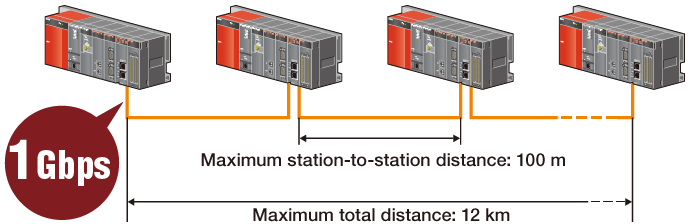
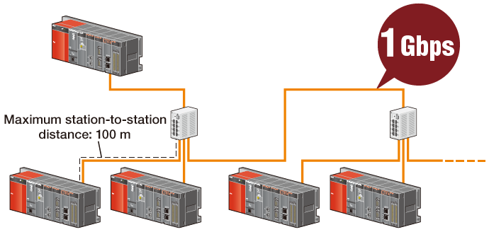
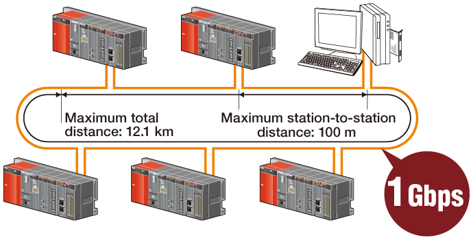
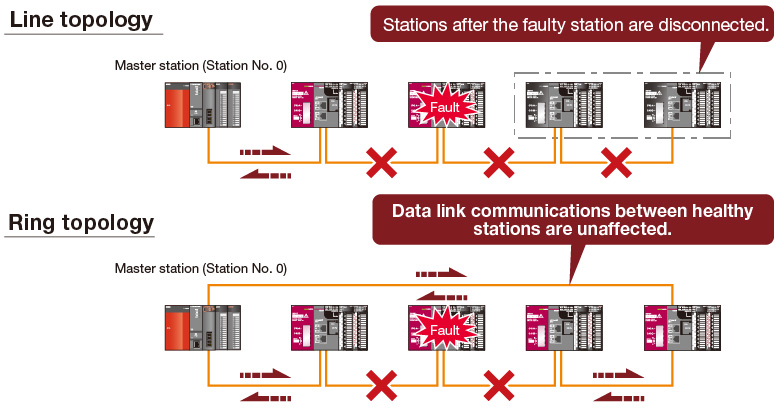
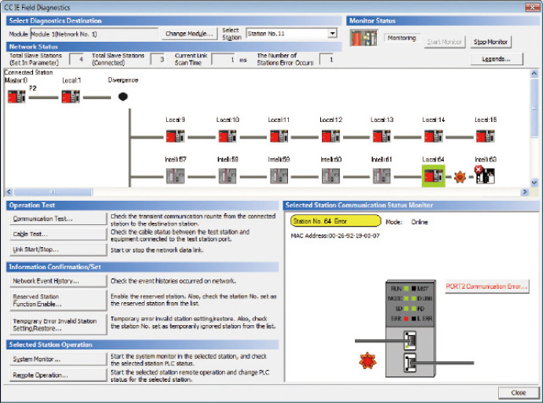

Controllers MELSEC-Q Series
Product features -Network-

CC-Link IE Field Network
CC-Link IE Field Network
CC-Link IE Field Network module
- Tremendous speed and bandwidth using commercially available cables and connectors. The network design (topology) is highly flexible to fit any layout.
- Operates as either a master or local station. Perfect for managing remote I/O control and distributed control.
- Devices from other stations can be accessed easily via transient communication using dedicated instructions.
- Function blocks for transient communication are available to further simplify messaging.
- The network can ensure 32-bit data integrity using the station-based block data assurance function. This forces pairs of word data to get updated together during link refresh.
- The QJ71GF11-T2 CC-Link IE Field Network module can function as a local or master station.

[Line topology]

This method of connecting stations has two endpoints where stations are directly connected to each other and no hubs are necessary.
[Star topology]

Star networks are formed by connecting all stations to a hub.
[Ring topology]

Ring networks have no end points and continue to function even if a connection becomes broken.
■ Performance Specifications
| Item | Specification | |
|---|---|---|
| Max. link points per network | RX | 16K points (16384 points, 2 KB) |
| RY | 16K points (16384 points, 2 KB) | |
| RWr | 8K points (8192 points, 16 KB) | |
| RWw | 8K points (8192 points, 16 KB) | |
| Max. link points per station | RX | 2K points (2048 points, 256 B) |
| RY | 2K points (2048 points, 256 B) | |
| RWr | 1K points (1024 points, 2 KB) | |
| RWw | 1K points (1024 points, 2 KB) | |
| Communication speed | 1 Gbps | |
| Number of stations per network | 121 (1 master station plus 120 device stations) | |
| Connection cable | Ethernet cable (Category 5e or higher, double shielded/STP) | |
| Maximum overall cable distance | Line topology | 12 km (with 1 master station and 120 device stations connected) |
| Star topology | Depends on the system configuration.*1 | |
| Ring topology | 12.1 km (with 1 master station and 120 device stations connected) | |
| Max. station-to-station distance | 100 m | |
| Max. number of networks | 239 | |
| Network topology | Line, star, line and star mixed, or ring*2 | |
- *1.Up to 20 hubs can be connected per network.
- *2.Ring networks may not be mixed with line or star networks. QJ71GF11-T2 network modules whose first five serial number digits are 12072 or later are required for ring networks. Additionally, GX Works2 version 1.34 L or later is required.
Easy diagnosis functions
- In certain situations such as power loss, a station could be prevented from communicating.
In a line network this can cause perfectly healthy stations can become separated from the network. In a ring network, only the faulty station is separated, thus increasing the system reliability.

Visual display of network connection status

The network diagnostic tools in GX Works2*3 allow problems to be identified rapidly. In addition to a visual overview of the network and several other tools, detailed monitoring of CPUs and modules from any station, to any station is possible.
- *3.Not supported by GX Developer.